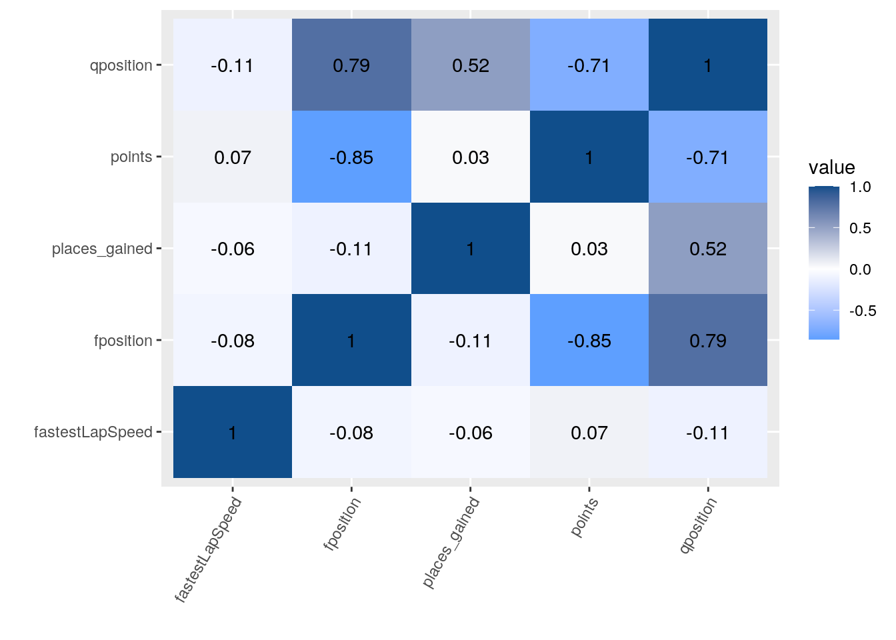
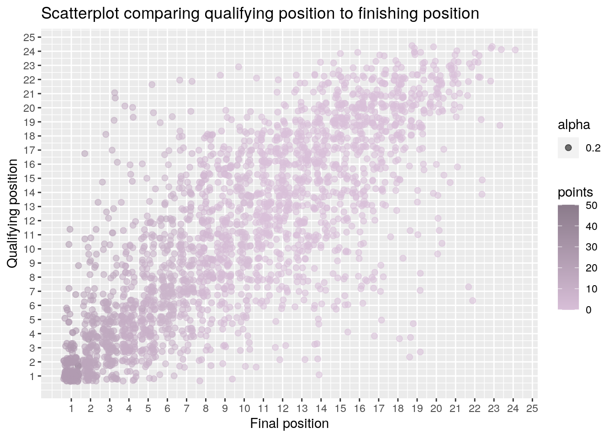
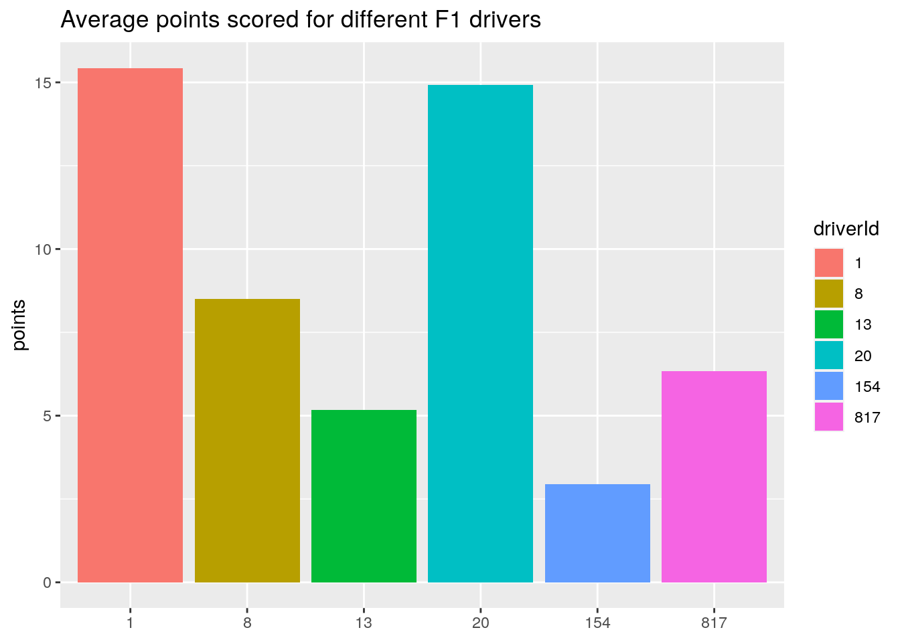
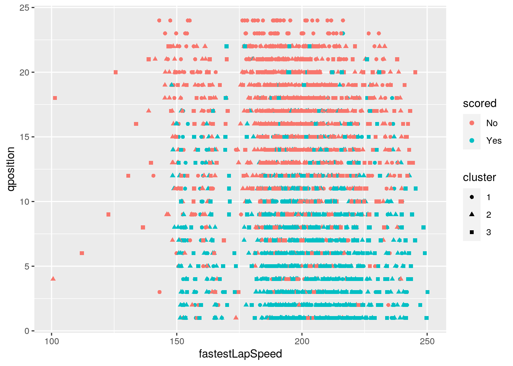

In this project I will be using two datasets containing information from Formula One (F1) Racing dating from 1950-2018. The first dataset is called "results" and contains the results of over 1000 race with over 23,000 data points. This data set has variables including every driver, constructor, race, fastestlaptime, points, finishing position, etc.The second dataset is called "qualifying1" and contains data from the qualifying sessions of all of the same races as in the previou dataset. This data includes qualifying position, race, constructor, and driver as well. This data is interesting to me because I love watching F1 on the weekend and I have become much more invested in the sport in recent years. I would love to learn more about it and it seemed like a subject that would have a lot of useable data from over the years. I expect to see an association between doing well in qualifying and doing well in the race itself. I found this data from kaggle.com.
library(readr)
qualifying1 <- read_csv("qualifying1.csv")
qualifying1## # A tibble: 7,516 x 9
## qualifyId raceId driverId constructorId number position q1 q2 q3
## <dbl> <dbl> <dbl> <dbl> <dbl> <dbl> <time> <time> <time>
## 1 1 18 1 1 22 1 01:26 01:25 01:26
## 2 2 18 9 2 4 2 01:26 01:25 01:26
## 3 3 18 5 1 23 3 01:25 01:25 01:27
## 4 4 18 13 6 2 4 01:26 01:25 01:27
## 5 5 18 2 2 3 5 01:26 01:25 01:27
## 6 6 18 15 7 11 6 01:26 01:26 01:28
## 7 7 18 3 3 7 7 01:26 01:26 01:28
## 8 8 18 14 9 9 8 01:26 01:26 01:29
## 9 9 18 10 7 12 9 01:26 01:26 01:29
## 10 10 18 20 5 15 10 01:26 01:25 NA
## # … with 7,506 more rowslibrary(readr)
results <- read_csv("results.csv")
results## # A tibble: 23,777 x 18
## resultId raceId driverId constructorId number grid position positionText
## <dbl> <dbl> <dbl> <dbl> <dbl> <dbl> <dbl> <chr>
## 1 1 18 1 1 22 1 1 1
## 2 2 18 2 2 3 5 2 2
## 3 3 18 3 3 7 7 3 3
## 4 4 18 4 4 5 11 4 4
## 5 5 18 5 1 23 3 5 5
## 6 6 18 6 3 8 13 6 6
## 7 7 18 7 5 14 17 7 7
## 8 8 18 8 6 1 15 8 8
## 9 9 18 9 2 4 2 NA R
## 10 10 18 10 7 12 18 NA R
## # … with 23,767 more rows, and 10 more variables: positionOrder <dbl>,
## # points <dbl>, laps <dbl>, time <chr>, milliseconds <dbl>, fastestLap <dbl>,
## # rank <dbl>, fastestLapTime <time>, fastestLapSpeed <dbl>, statusId <dbl>library("tidyverse")
library(tidyr)
library(dplyr)
qualrecent <- qualifying1 %>% filter(raceId >= 841) %>% rename(qposition = position)
resrecent <- results %>% filter(raceId >= 841) %>% rename(fposition = position)*To clean up the data I removed all data from before 2011 which is a year after F1 changed to the new points system (25 points for 1st along with increased values until 10th place). There was a variable called "position" in each dataset which did not refrence the same thing so I renamed position from the qualifying1 dataset to "qposition" and from the results dataset to "fposition".
f1big <- full_join(resrecent, qualrecent)
f1big## # A tibble: 3,013 x 23
## resultId raceId driverId constructorId number grid fposition positionText
## <dbl> <dbl> <dbl> <dbl> <dbl> <dbl> <dbl> <chr>
## 1 20779 841 20 9 1 1 1 1
## 2 20780 841 1 1 3 2 2 2
## 3 20781 841 808 4 10 6 3 3
## 4 20782 841 4 6 5 5 4 4
## 5 20783 841 17 9 2 3 5 5
## 6 20784 841 18 1 4 4 6 6
## 7 20785 841 13 6 6 8 7 7
## 8 20786 841 67 5 18 10 8 8
## 9 20787 841 16 10 14 16 9 9
## 10 20788 841 814 10 15 14 10 10
## # … with 3,003 more rows, and 15 more variables: positionOrder <dbl>,
## # points <dbl>, laps <dbl>, time <chr>, milliseconds <dbl>, fastestLap <dbl>,
## # rank <dbl>, fastestLapTime <time>, fastestLapSpeed <dbl>, statusId <dbl>,
## # qualifyId <dbl>, qposition <dbl>, q1 <time>, q2 <time>, q3 <time>I joined my dataset using the full_join function with the common variable of raceId. I discussed which data I dropped in the last section, I don't know that there will be any problems with this because the sport is different today than it was in 1950 so it wouldn't make sense to go that far back in the data.
f1 <- f1big %>% select(resultId, raceId, driverId, constructorId,
points, fastestLapSpeed, fposition, qposition, q1, q2, q3)
f1## # A tibble: 3,013 x 11
## resultId raceId driverId constructorId points fastestLapSpeed fposition
## <dbl> <dbl> <dbl> <dbl> <dbl> <dbl> <dbl>
## 1 20779 841 20 9 25 212. 1
## 2 20780 841 1 1 18 211. 2
## 3 20781 841 808 4 15 212. 3
## 4 20782 841 4 6 12 213. 4
## 5 20783 841 17 9 10 213. 5
## 6 20784 841 18 1 8 212. 6
## 7 20785 841 13 6 6 215. 7
## 8 20786 841 67 5 4 210. 8
## 9 20787 841 16 10 2 209. 9
## 10 20788 841 814 10 1 208. 10
## # … with 3,003 more rows, and 4 more variables: qposition <dbl>, q1 <time>,
## # q2 <time>, q3 <time>In this section I created a new dataset that I will be using for the next few parts that only includes the variables that are important for what I want to do in this project.
f1 %>% arrange(desc(fastestLapSpeed)) %>% select(fastestLapSpeed)## # A tibble: 3,013 x 1
## fastestLapSpeed
## <dbl>
## 1 250.
## 2 250.
## 3 249.
## 4 249.
## 5 247.
## 6 245.
## 7 245.
## 8 245.
## 9 244.
## 10 244.
## # … with 3,003 more rowsI used the arrange function to find the fastest lap speed in this dataset which turned out to be 250.174 MPH.
f1good <- f1[!is.na(f1$points), ]
f1good$scored <- ifelse(f1good$points == 0, "No", "Yes")
scored <- f1good$scored
f1good## # A tibble: 3,001 x 12
## resultId raceId driverId constructorId points fastestLapSpeed fposition
## <dbl> <dbl> <dbl> <dbl> <dbl> <dbl> <dbl>
## 1 20779 841 20 9 25 212. 1
## 2 20780 841 1 1 18 211. 2
## 3 20781 841 808 4 15 212. 3
## 4 20782 841 4 6 12 213. 4
## 5 20783 841 17 9 10 213. 5
## 6 20784 841 18 1 8 212. 6
## 7 20785 841 13 6 6 215. 7
## 8 20786 841 67 5 4 210. 8
## 9 20787 841 16 10 2 209. 9
## 10 20788 841 814 10 1 208. 10
## # … with 2,991 more rows, and 5 more variables: qposition <dbl>, q1 <time>,
## # q2 <time>, q3 <time>, scored <chr>In this section I created a new column, called "scored" in a new dataset, called "f1good". The scored column is categorical variable that tracks if a driver scored points in a race or not which is pretty much a way to say did they finish 10th or better.
f1good %>% group_by(scored) %>% summarize(fl = min(fastestLapSpeed,
na.rm = T))## # A tibble: 2 x 2
## scored fl
## <chr> <dbl>
## 1 No 101.
## 2 Yes 148.Here, I used the group_by function to compare the lowest lap speed for anyone in this dataset that scored a point which came out to be 147.98 MPH, and the lowest lap speed for any driver that didn't score points which is also just the lowest lap speed, 100.62 MPH.
f1mut <- f1 %>% mutate(places_gained = qposition - fposition)
f1mut## # A tibble: 3,013 x 12
## resultId raceId driverId constructorId points fastestLapSpeed fposition
## <dbl> <dbl> <dbl> <dbl> <dbl> <dbl> <dbl>
## 1 20779 841 20 9 25 212. 1
## 2 20780 841 1 1 18 211. 2
## 3 20781 841 808 4 15 212. 3
## 4 20782 841 4 6 12 213. 4
## 5 20783 841 17 9 10 213. 5
## 6 20784 841 18 1 8 212. 6
## 7 20785 841 13 6 6 215. 7
## 8 20786 841 67 5 4 210. 8
## 9 20787 841 16 10 2 209. 9
## 10 20788 841 814 10 1 208. 10
## # … with 3,003 more rows, and 5 more variables: qposition <dbl>, q1 <time>,
## # q2 <time>, q3 <time>, places_gained <dbl>*Here, I used the mutate function to add a column called places_gained which is just the difference in position for each driver from the start of the race to the end of the race.
f1total <- left_join(f1good, f1mut)
f1total## # A tibble: 3,001 x 13
## resultId raceId driverId constructorId points fastestLapSpeed fposition
## <dbl> <dbl> <dbl> <dbl> <dbl> <dbl> <dbl>
## 1 20779 841 20 9 25 212. 1
## 2 20780 841 1 1 18 211. 2
## 3 20781 841 808 4 15 212. 3
## 4 20782 841 4 6 12 213. 4
## 5 20783 841 17 9 10 213. 5
## 6 20784 841 18 1 8 212. 6
## 7 20785 841 13 6 6 215. 7
## 8 20786 841 67 5 4 210. 8
## 9 20787 841 16 10 2 209. 9
## 10 20788 841 814 10 1 208. 10
## # … with 2,991 more rows, and 6 more variables: qposition <dbl>, q1 <time>,
## # q2 <time>, q3 <time>, scored <chr>, places_gained <dbl>I created a new dataset that I used for the rest of the project that included the new variables I created, score and places_gained. I used left join to join these datasets because that had almost entirely the same data except for one column in each that needed to be added to each other. This is the same as the F1 dataset but included those two variabled.
f1total$resultId = as.factor(f1total$resultId)
f1total$raceId = as.factor(f1total$raceId)
f1total$constructorId = as.factor(f1total$constructorId)
f1total$driverId = as.factor(f1total$driverId)I had to clean up this new dataset a little bit. These variables (resultID, raceId, constructorID, and driverId) are all listed in the dataset as numeric becaise they are numbers however they represent categorical variables so I changed them.
library(chron)
mean(times(f1$q3))## [1] 01:30:01mean(times(f1$q2))## [1] 01:30:45mean(times(f1$q1))## [1] 01:31:51The variables "q1", "q2", and "q3" are all in the hms class rather than numeric so I had to download the library "chron" to get the times function to find the mean. I dont incude this data anywhere else because the data didn't exactly convert correctly onto R, there was supposed to be a milliseconds bit that got replaced by zeros when I imported into R. These are the rough means for each of those variables that were rounded when the dataset was imported.
f1total %>% summary(is.numeric = T)## resultId raceId driverId constructorId points
## 20779 : 1 841 : 24 1 : 137 1 : 274 Min. : 0.000
## 20780 : 1 842 : 24 20 : 137 3 : 274 1st Qu.: 0.000
## 20781 : 1 843 : 24 13 : 136 5 : 274 Median : 0.000
## 20782 : 1 844 : 24 815 : 136 6 : 274 Mean : 4.644
## 20783 : 1 845 : 24 4 : 134 9 : 274 3rd Qu.: 8.000
## 20784 : 1 846 : 24 817 : 129 10 : 274 Max. :50.000
## (Other):2995 (Other):2857 (Other):2192 (Other):1357
## fastestLapSpeed fposition qposition q1
## Min. :100.6 Min. : 1.000 Min. : 1.00 Length:3001
## 1st Qu.:188.0 1st Qu.: 5.000 1st Qu.: 6.00 Class1:hms
## Median :197.5 Median :10.000 Median :11.00 Class2:difftime
## Mean :197.5 Mean : 9.714 Mean :11.42 Mode :numeric
## 3rd Qu.:210.3 3rd Qu.:14.000 3rd Qu.:17.00
## Max. :250.2 Max. :24.000 Max. :24.00
## NA's :149 NA's :529 NA's :33
## q2 q3 scored places_gained
## Length:3001 Length:3001 Length:3001 Min. :-17.000
## Class1:hms Class1:hms Class :character 1st Qu.: -1.000
## Class2:difftime Class2:difftime Mode :character Median : 1.000
## Mode :numeric Mode :numeric Mean : 1.421
## 3rd Qu.: 4.000
## Max. : 18.000
## NA's :554I used the summary function to get the min, max, median, mean, Q1, and Q3 for each numeric variable in my data.
f1total %>% group_by(raceId) %>% summarize(mean(fastestLapSpeed)) %>%
na.omit()## # A tibble: 66 x 2
## raceId `mean(fastestLapSpeed)`
## <fct> <dbl>
## 1 842 193.
## 2 845 188.
## 3 847 190.
## 4 848 187.
## 5 849 214.
## 6 850 190.
## 7 851 183.
## 8 854 160.
## 9 855 212.
## 10 856 197.
## # … with 56 more rowsThis shows the average fastest lap speed for each race.
f1total %>% group_by(raceId, constructorId) %>% summarize(fastestLapSpeed)## # A tibble: 3,001 x 3
## # Groups: raceId, constructorId [1,501]
## raceId constructorId fastestLapSpeed
## <fct> <fct> <dbl>
## 1 841 1 211.
## 2 841 1 212.
## 3 841 3 209.
## 4 841 3 203.
## 5 841 4 212.
## 6 841 4 207.
## 7 841 5 210.
## 8 841 5 211.
## 9 841 6 213.
## 10 841 6 215.
## # … with 2,991 more rowsThis summary shows the fastest lap speed for both drivers for each constructor.
f1num <- f1total %>% select(points, fastestLapSpeed, fposition,
qposition, places_gained) %>% na.omit()
corylation <- cor(f1num)
round(corylation, 2)## points fastestLapSpeed fposition qposition places_gained
## points 1.00 0.07 -0.85 -0.71 0.03
## fastestLapSpeed 0.07 1.00 -0.08 -0.11 -0.06
## fposition -0.85 -0.08 1.00 0.79 -0.11
## qposition -0.71 -0.11 0.79 1.00 0.52
## places_gained 0.03 -0.06 -0.11 0.52 1.00In this section I created a correlation matrix that I will be using in the visualization section.
library("ggplot2")
corylation %>% as.data.frame %>% rownames_to_column %>% pivot_longer(-1) %>%
ggplot(aes(rowname, name, fill = value)) + geom_tile() +
geom_text(aes(label = round(value, 2))) + xlab("") + ylab("") +
scale_fill_gradient2(low = "dodgerblue", high = "dodgerblue4") +
theme(axis.text.x = element_text(angle = 60, hjust = 1)) This is a correlation heatmap comparing all of the numeric variables in my datasets. We can see a strong negative correlation between points and final position meaning the higher the number of the position a driver finishes the less points they score which makes perfect sense. The next most significant variable comparison is between qualifying position and final position. This also makes sense because passing is difficult in a race so drivers generally finish around the spot they started in. We also see a solid negative correlation between quaifying position and points scored which makes sense based on the previous two comparisons made.
f1total %>% ggplot(aes(x = fposition, y = qposition)) + geom_jitter(size = 2,
aes(color = points, alpha = 0.2)) + scale_color_gradient(low = "thistle",
high = "thistle4") + ggtitle("Scatterplot comparing qualifying position to finishing position") +
xlab("Final position") + ylab("Qualifying position") + scale_y_continuous(breaks = seq(1,
25, 1)) + scale_x_continuous(breaks = seq(1, 25, 1)) This is a scatterplot comparing all of the drivers qualifying positions to their finishing position with the color gradient being associated with points scored. There appears to be a strong positive correlation between qualifying position and final position which is what we would expect to see because drivers who qualify higher(lower number) start in a better position in the race. We also see the color gradient gets much darker going from right to left, this is because points are directly associated with final position.
f1total %>% filter(driverId == "1" | driverId == "8" | driverId ==
"20" | driverId == "154" | driverId == "817" | driverId ==
"13") %>% ggplot(aes(x = driverId, y = points, fill = driverId)) +
geom_bar(stat = "summary", fun.y = "mean", position = "dodge") +
ggtitle("Average points scored for different F1 drivers") +
theme(axis.title.x = element_blank(), legend.position = "right") +
scale_y_continuous(breaks = seq(0, 140, 5))
ham <- f1total %>% filter(driverId == "1")
mean(ham$points)## [1] 15.43066Each driverId corresponds to a different F1 driver who has raced in over 100 races since 2011. Driver 1 is Lewis Hamilton who over this set of races has averaged a little over 15 points per race. The code below the code for the graph is there to make sure the graph has the correct numbers, and looking at the results from that this graph is accurate.
library(cluster)
pam <- f1total %>% pam(k = 3)
pam## Medoids:
## ID resultId raceId driverId constructorId points fastestLapSpeed
## [1,] 376 376 16 31 10 0 192.752
## [2,] 1497 1497 65 35 8 0 195.970
## [3,] 2546 2546 115 49 3 0 183.205
## fposition qposition q1 q2 q3 scored places_gained
## [1,] 19 24 NA NA NA NA 5
## [2,] 14 22 NA NA NA NA 8
## [3,] 14 NA NA NA NA NA NA
## Clustering vector:
## [1] 1 1 1 1 1 1 1 1 1 1 1 1 1 1 1 1 1 1 1 1 1 1 1 1 1 1 1 1 1 1 1 1 1 1 1 1 1
## [38] 1 1 1 1 1 1 1 1 1 1 1 1 1 1 1 1 1 1 1 1 1 1 1 1 1 1 1 1 1 1 1 1 1 1 1 1 1
## [75] 1 1 1 1 1 1 1 1 1 1 1 1 1 1 1 1 1 1 1 1 1 1 1 1 1 1
## [ reached getOption("max.print") -- omitted 2901 entries ]
## Objective function:
## build swap
## 332.2133 332.2133
##
## Available components:
## [1] "medoids" "id.med" "clustering" "objective" "isolation"
## [6] "clusinfo" "silinfo" "diss" "call" "data"clust <- f1total %>% mutate(cluster = as.factor(pam$clustering))
clust %>% ggplot(aes(fastestLapSpeed, qposition, color = scored,
shape = cluster)) + geom_point() In this clustering section I created a partioning around mediods (PAM) dataset using the f1total dataset, comparting fastedt lap speed, qualifying position, as well as sorting by whether the driver scored points or not. There is not much of a correlation in this chart, I chose to center around 3 clusters because there are no clear clusters and that was the standard amount we used in class. Looking at this cluster graph we can see that drivers who scored points tended to qualify higher, which is exactly what we saw in the correlation matrix. There seem to be about 10-15 data points lower than 150 fastest lap the rest are above, the ones below are likely due to malfunctions in the car.